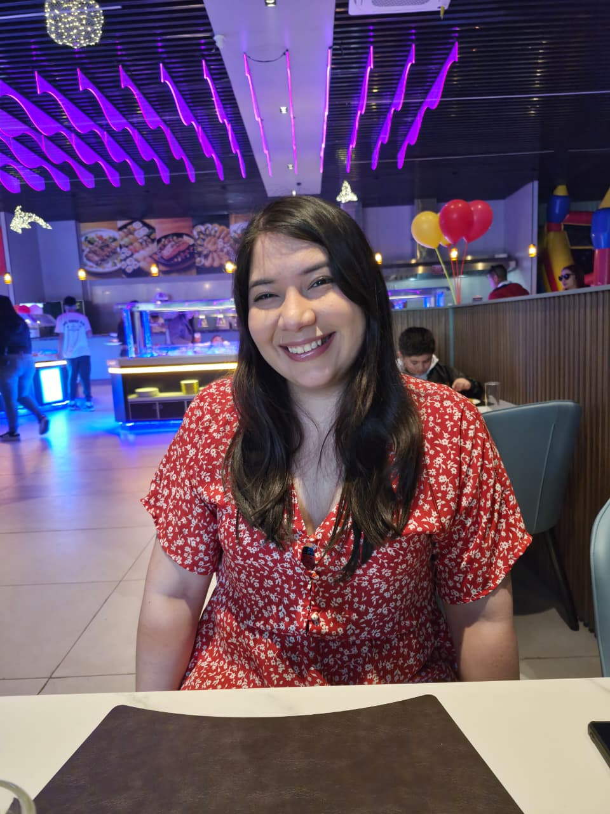
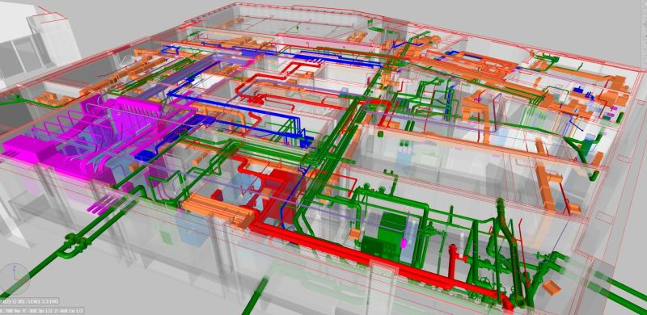
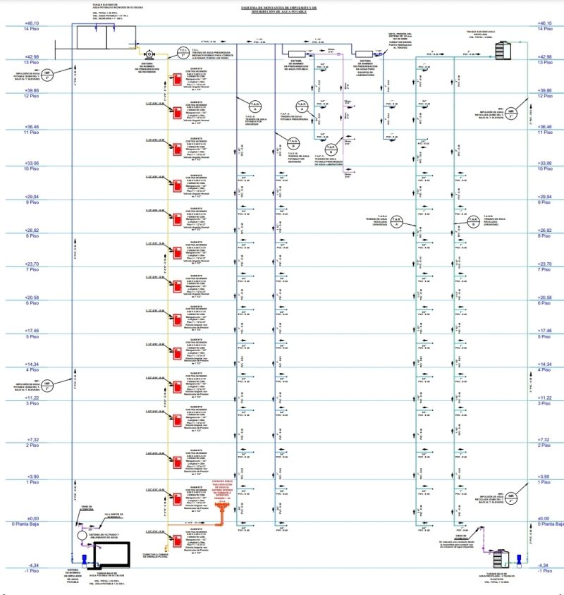
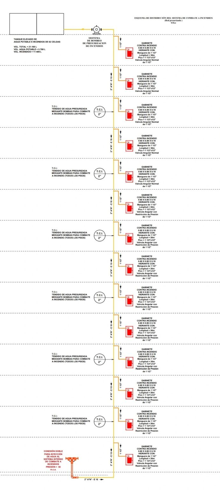
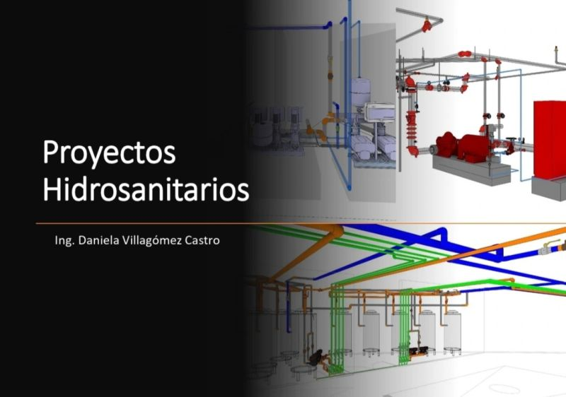

Hidráulica
Dimensionamiento, redes, cálculos y diseño eficiente para proyectos habitacionales, comerciales y de infraestructura.
PORTAFOLIO PERSONAL · 2026
Daniela Villagómez Castro desarrolla proyectos hidráulicos e hidrosanitarios que convierten la complejidad técnica en espacios seguros y eficientes.
Conoce mi trabajo ↓
DISEÑO TÉCNICO
CON PROPÓSITO
Una landing que transmite cercanía, criterio y una mirada contemporánea.
SOBRE MÍ — 01
Ingeniera Civil · Fire Protection Designer · MEP Coordinator · Plumbing Designer · Site Engineer. Especialista en hidráulica, hidrosanitarios, BIM, Revit, AutoCAD y AutoSprink.
Hablemos de tu proyecto ↗SERVICIOS — 02
Dimensionamiento, redes, cálculos y diseño eficiente para proyectos habitacionales, comerciales y de infraestructura.
Soluciones de agua potable, drenaje, pluviales, piscinas y espacios de bienestar con enfoque operativo y práctico.
Modelado, revisión técnica y coordinación entre disciplinas para evitar errores y mejorar la ejecución en obra.
PROYECTOS — 03
Trabajo reciente

01 / OBRA EJECUTADA · 2019—2021Sistema de combate a incendios
+ coordinación BIM

02 / SANITARIOS Y PLUVIALES
03 / EXTINCIÓN A INCENDIOS
04 / PISCINAS E HIDROMASAJESCONTACTO — 04